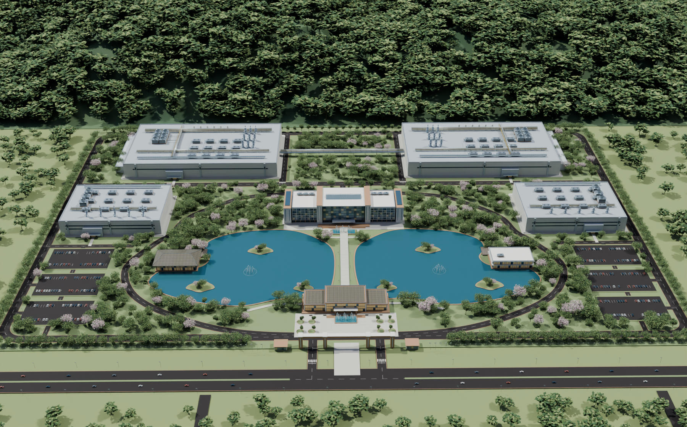
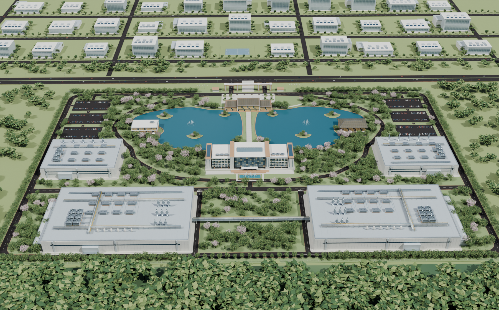
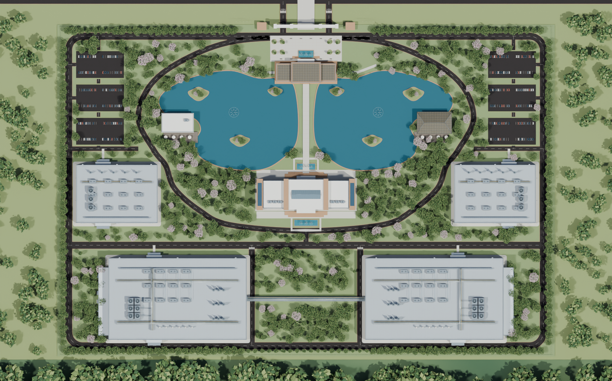
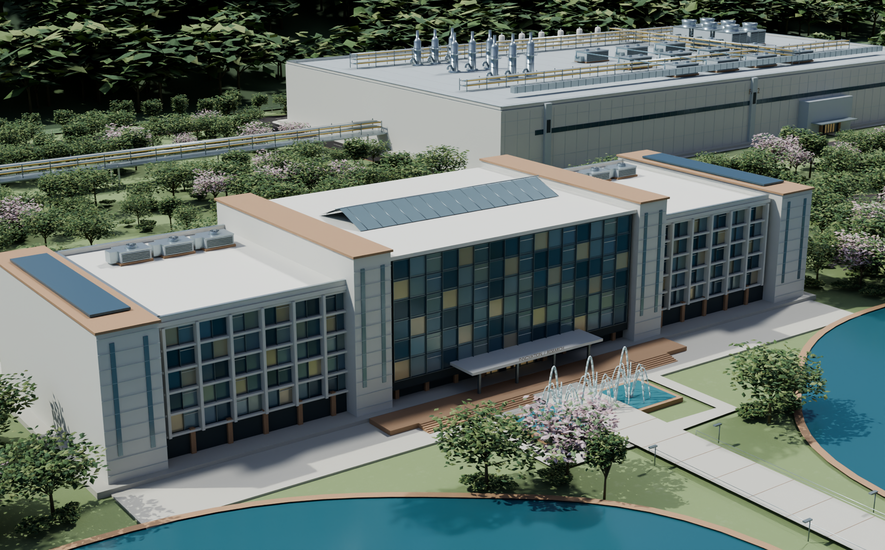
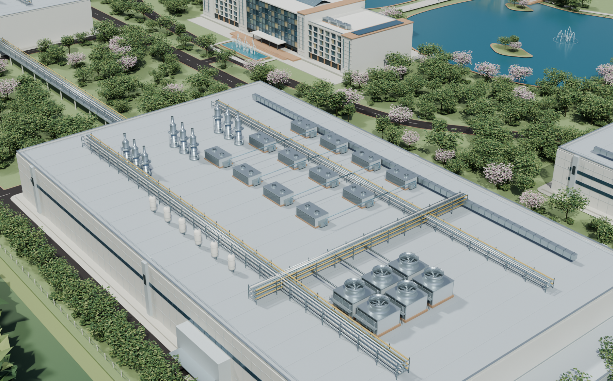
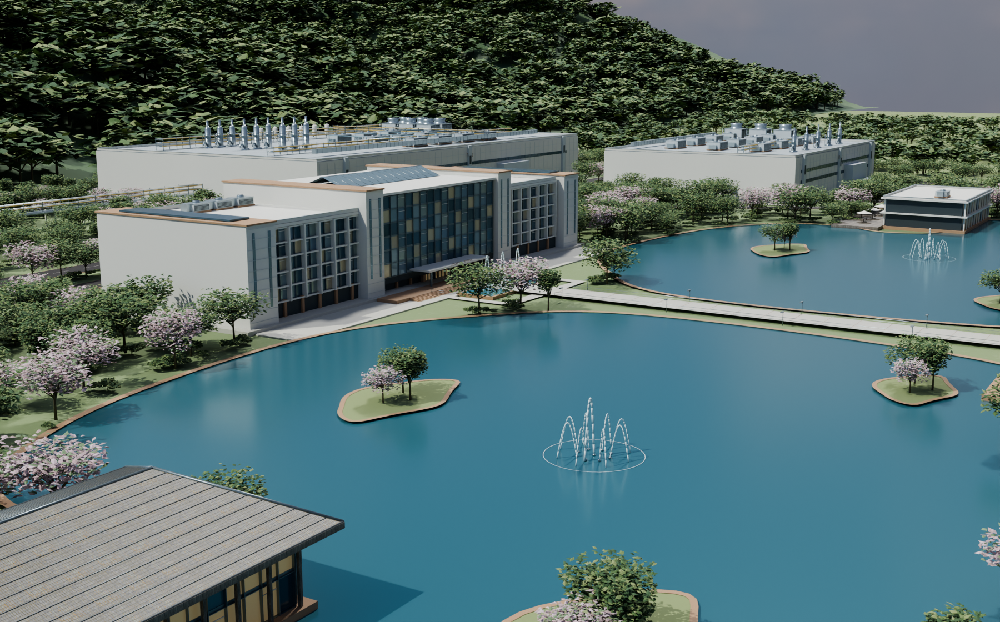
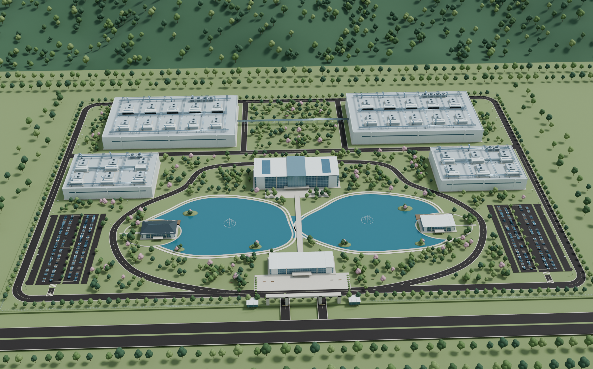
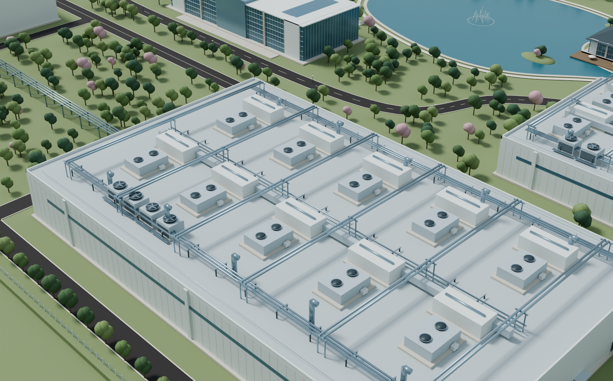
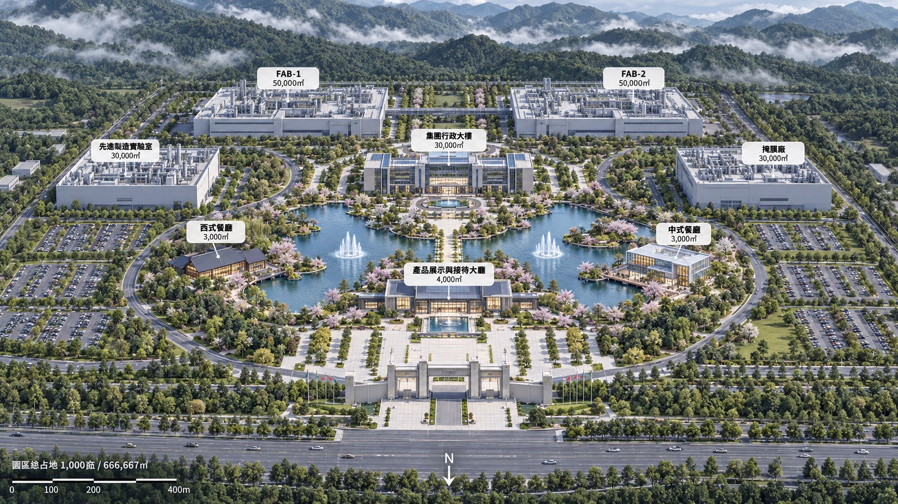
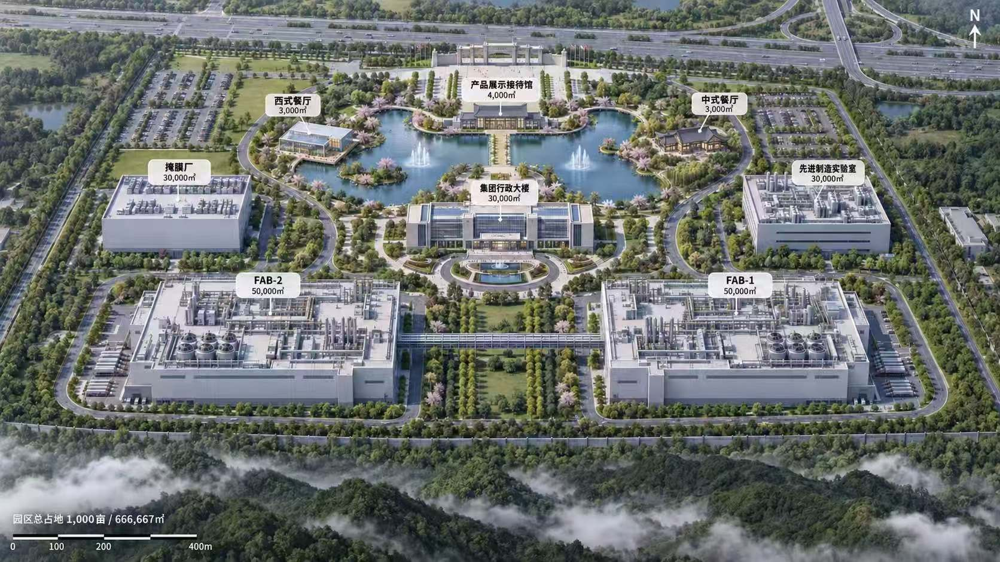

两张 AI 概念图为设计依据；真实幕墙、冷却塔及建成湖岸资料用于补足模糊构造。以下为 Blender Cycles 渲染，网页实时画面采用相同模型与材质，但光照效果存在差异。






对比同一观察方向；相机与照明经过重设，并非像素配准对比。




凤凰山位于南侧。地形、周边建筑、设备流程与尺寸是概念重构，尚无实测依据；本次不是施工模型。餐厅按东西方位命名，避免继承两张 AI 图片互换的标签。